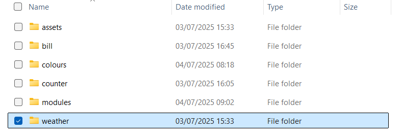
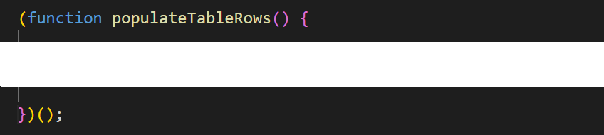
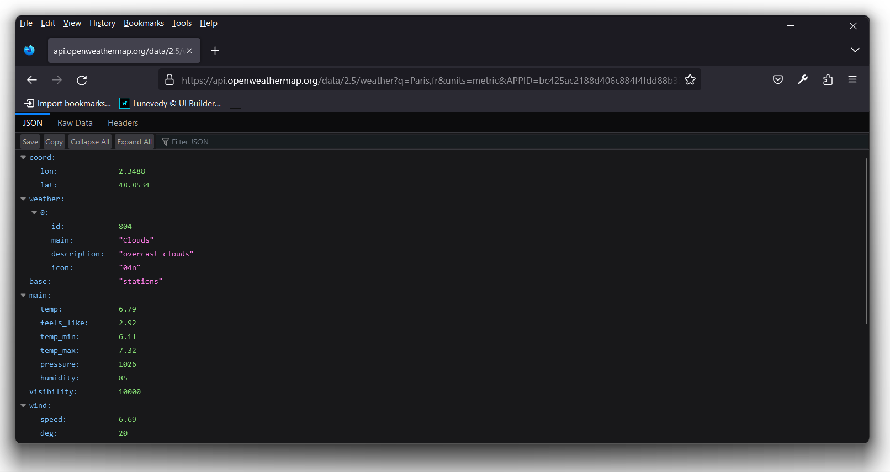
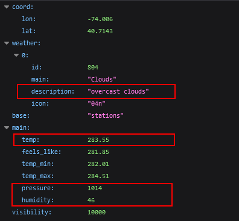
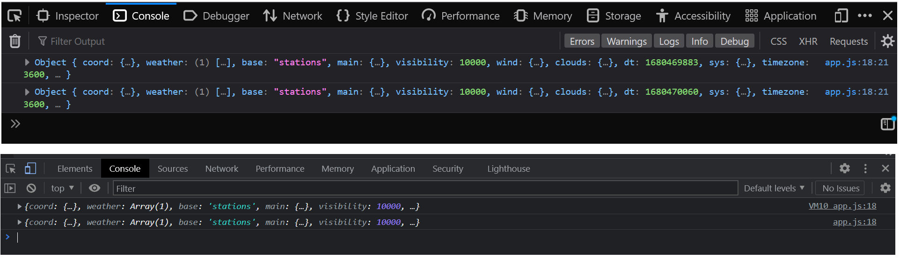
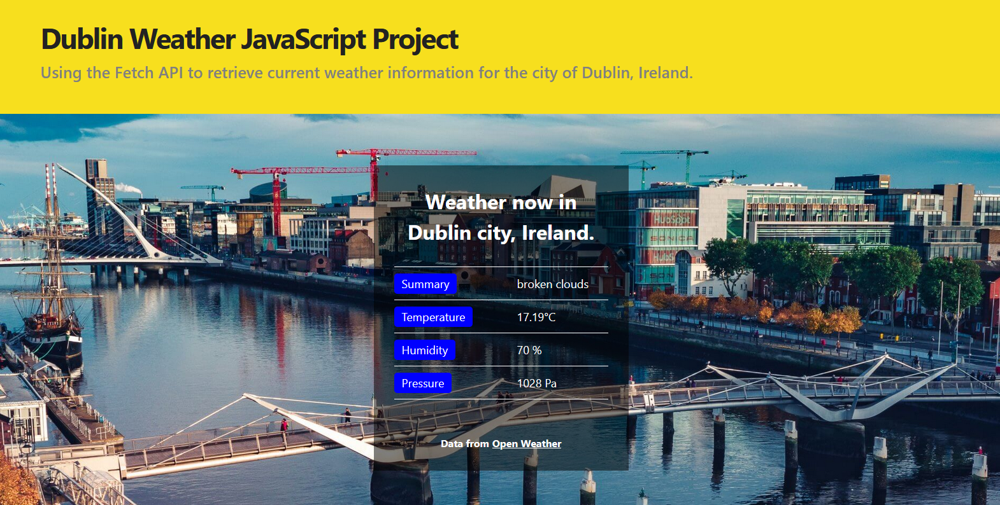

Project Description
Use the Fetch API to retrieve current weather information for the city of Dublin, Ireland.
Your project folder
In your 📁 js folder is a sub-folder named 📁 weather that contains these two files:
- An index.html file contains the HTML and CSS.
- An app.js file is that is empty.
Open both the index.html and app.js files in VS Code.
Open the index.html in a web browser.
Do not use Apple Safari or Microsoft Edge.
Creating the table with JavaScript
Follow these steps.
- In the index.html file, you can see an HTML table with a <tbody> element. But the <tbody> has no <tr> rows and <td> cells.
 You will generate these rows and cells with JavaScript.
At the bottom of the index.html web page, add a link to the empty app.js file.
When you display the index.html web page in a browser, table element currently looks as shown below.
You will generate these rows and cells with JavaScript.
At the bottom of the index.html web page, add a link to the empty app.js file.
When you display the index.html web page in a browser, table element currently looks as shown below.

- In the app.js file, create a function named populateTableRows().
- Inside this function, create a string variable named strTableRows and assign the content below to this variable.
<tr> <td><span>Summary</span></td> <td>Row 1, Cell 2</td> </tr> <tr> <td><span>Temperature</span></td> <td>Row 2, Cell 2</td> </tr> <tr> <td><span>Humidity</span></td> <td>Row 3, Cell 2</td> </tr> <tr> <td><span>Pressure</span></td> <td>Row 4, Cell 2</td> </tr> - On the last line of the populateTableRows() function, add a line that assigns the content of the strTableRows string to the table with an id of table-weather-dublin in the index.html file.
- Transform your populateTableRows() function into an IIFE as shown below. 
- Save your app.js file and reload the index.html in your web browser. The code should now run and the table rows should be created. See below.

Exploring the Open Weather API
You will use the free public API from Open Weather to obtain live weather data.
- Open a new tab in your web browser and enter the following web address with an API end-point.
https://api.openweathermap.org/data/2.5/weather?q=Paris,fr&units=metric&APPID=bc425ac2188d406c884f4fdd88b339f0
Your web browser should display a screen similar to the following.  You can see that the link contains a city name Paris and a country code fr. - The API provides a wide range of data items. In this project, we will use the following four. 
Using the Fetch API
The JavaScript Fetch API has the following general syntax. In the example below, the feed data is provided in JSON format.
async function myFunction() {
await fetch('https://api.openweathermap.org/data/2.5/weather?q=dublin,ie&units=metric&APPID=bc425ac2188d406c884f4fdd88b339f0')
.then(response => {
if (response.status !== 200) {
console.log('Error Status Code: ' + response.status);
return;
}
response.json().then((data) => {
// Test if data is being received
console.log(data);
// update web page here
});
})
.catch(error => {
// handle any error
});
}- Add the Fetch API code above to the top of your populateTableRows() function.
- Save your app.js script and view the web page in your browser. It should look as shown before.
- Open your browser console and verify that the data is being obtained in JSON format from the weather feed. 
- In the populateTableRows() function, update the four table rows as follows.
<tr> <td><span>Summary</span></td> <td>${data["weather"][0]["description"]}</td> </tr><tr> <td><span>Temperature</span></td> <td>${data["main"]["temp"] + "°C"}</td> </tr><tr> <td><span>Humidity</span></td> <td>${data["main"]["humidity"] + " %"}</td> </tr>
You can now remove the console.log statement.<tr> <td><span>Pressure</span></td> <td>${data["main"]["pressure"] + " Pa"}</td> </tr>
Save your app.js script, view the web page in your browser and verify the page works correctly.
